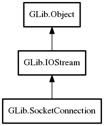

SocketConnection
Object Hierarchy:
Description:
SocketConnection is a IOStream for a connected socket.
They can be created either by SocketClient when connecting to a host, or by SocketListener when accepting a new client.
The type of the SocketConnection object returned from these calls depends on the type of the underlying socket that is in use. For instance, for a TCP/IP connection it will be a TcpConnection.
Choosing what type of object to construct is done with the socket connection factory, and it is possible for 3rd parties to register custom socket connection types for specific combination of socket family/type/protocol using factory_register_type.
To close a SocketConnection, use close. Closing both substreams of the IOStream separately will not close the underlying Socket.
All known sub-classes:

Namespace: GLib
Package: gio-2.0
Content:
Properties:
Static methods:
Creation methods:
Methods:
Inherited Members:
All known members inherited from class GLib.IOStream
All known members inherited from class GLib.Object